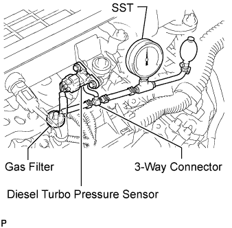
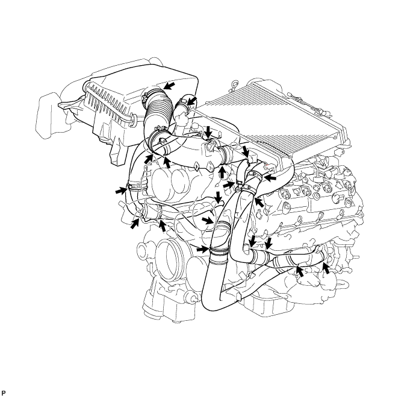
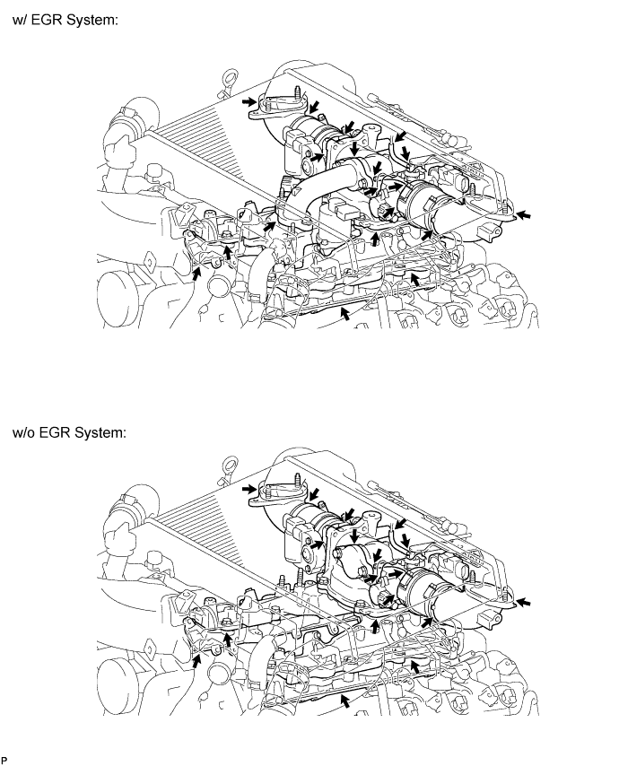

INTAKE SYSTEM > ON-VEHICLE INSPECTION |
| 1. CHECK INTAKE AIR CONTROL SYSTEM |
Check for leakage or clogging between the air cleaner housing and inlet turbocharger and between the outlet turbocharger and cylinder head.
| Condition | Operation |
| Clogged air cleaner | Replace element |
| Hoses collapsed or deformed | Repair or replace |
| Leakage from connections | Check each connection and repair |
| Cracks in components | Check and replace |
| 2. CHECK EXHAUST SYSTEM |
Check for leakage or clogging between the cylinder head and turbocharger inlet and between the turbocharger outlet and exhaust pipe.
| Condition | Operation |
| Deformed components | Repair or replace |
| Foreign material in passages | Remove |
| Leakage from components | Repair or replace |
| Cracks in components | Check and replace |
| 3. CHECK TURBOCHARGING PRESSURE |
Warm up the engine.
 |
Using a 3-way connector, connect SST (turbocharger pressure gauge) to the hose between the diesel turbo pressure sensor and the gas filter leading to the intake air connector.
for Automatic Transmission:
Fully depress the accelerator pedal. Measure the turbocharging pressure at maximum speed (4700 to 4900 rpm).
for Manual Transmission:
While depressing the clutch pedal, fully depress the accelerator pedal. Measure the turbocharging pressure at maximum speed (4700 to 4900 rpm).
| 4. CHECK AIR INDUCTION SYSTEM |
Check that the hoses, gaskets and O-rings are installed correctly.
Check for cracks, etc. in the hoses, gaskets and O-rings.

